Archimedes: reek (ca. 287–ca. 212 BCE)
There is no Nobel Prize for mathematics, but there are two awards in mathematics with a comparably high prestige, at least within the community. One is the Abel Prize, established in 2002 by the Norwegian government; the other is the Fields Medal, which was first awarded in 1936. Unlike the Nobel Prizes and the Abel Prize, which are awarded annually, the Fields Medals are awarded only every four years—and there is an age limit for its recipients. They must be under forty years of age. Although it might be strange to impose an age limit on such a prestigious award, there is a reason for doing so: the award is also intended to encourage future research. Officially known as the international medal for outstanding discoveries in mathematics, the colloquial name “Fields Medal” is in honor of the Canadian mathematician John Charles Fields (1863–1932). He began developing the award in the late 1920s and even chose the design of the medals. Unfortunately, he died from a stroke two years before the first medals were awarded. In his personal will, he left a $47,000 grant to establish a fund for the award. The Fields Medal is made of gold, and its front side shows the head of Archimedes1 (ca. 287–ca. 212 BCE) and the inscription “Transire suum pectus mundoque potiri” (see fig. 5.1). This is a quotation attributed to Archimedes; it can be translated as “Rise above oneself and grasp the world.”
Although this quote is emblazoned on the Fields Medal that bears his likeness, Archimedes is probably most famous for having proclaimed “Eureka! Eureka!” This particular phrase translates to “I’ve found it! I’ve found it!” This is what he exclaimed after having stepped into a bath and suddenly noticing that the amount by which the water level rose was a measure of the volume of the part of his body he had submerged (i.e., displacement). The background story adjoining this anecdote is that the local tyrant, Hiero II of Syracuse (ca. 308–215 BCE) contracted Archimedes to find a method by which the purity of a golden crown could be assessed without destroying it. Hiero’s request stemmed from his suspicion that his goldsmiths had replaced with silver some of the gold he had given them for the creation of the crown. Archimedes was able to solve the problem because gold weighs more than silver. Therefore, a crown mixed with silver would have to be bulkier than a purely golden crown of the same weight. Consequently, the adulterated crown would also displace more water. Although this story is compelling, the oldest source for it is a book on architecture by the Roman writer Vitruvius,2 which appeared approximately two hundred years after the alleged episode; it is very likely that the story has been substantially modified and embellished, even though there may be some truth in it. Further undermining this tale’s veracity, Galileo Galilei (1564–1642) pointed out that Archimedes could have achieved a much more accurate measurement by using a different method that relied on his own law of buoyancy, which is now known as Archimedes’s principle. Archimedes is also remembered as an ingenious inventor of mechanical devices, such as Archimedes’s screw for lifting water (see fig. 5.2) and various “super weapons” of the ancient world.
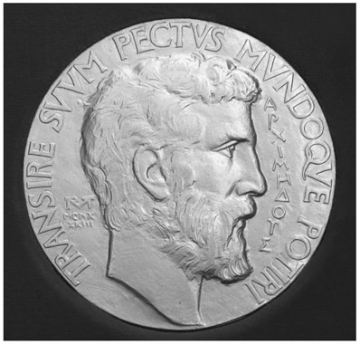
Figure 5.1. The Fields Medal. (Image from Stefan Zachow of the International Mathematical Union, retouched by King of Hearts.)
Perhaps less well known is the fact that Archimedes is generally considered the greatest mathematician of classical antiquity, which is why his profile decorates the Fields Medal. His mathematical achievements go well beyond the work of other ancient Greek mathematicians; in particular, he applied and perfected Eudoxus’ method of exhaustion to prove geometrical theorems. He developed the proofs that anticipated those of modern calculus. Unfortunately, almost nothing is known about Archimedes’s life, except for a few anecdotes and some biographical information he mentioned in his writings.
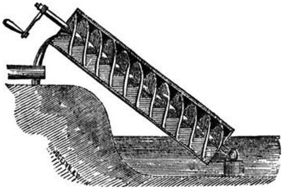
Figure 5.2. Archimedes’s screw. (Image from Chambers’s Encyclopedia (Philadelphia: J. B. Lippincott, 1875.)
Archimedes was born in the city of Syracuse on the island of Sicily in roughly 287 BCE. His father was an astronomer named Phidias, of whom nothing else is known. It is believed that Archimedes studied in the intellectual center of the ancient world: Alexandria, Egypt. Supporting this belief is the fact that two of Archimedes’s works have introductions addressed to Eratosthenes (ca. 276–ca. 195 BCE), who was in charge of the legendary Great Library of Alexandria, a place where the greatest scholars of the ancient world would meet. Eratosthenes is famous for calculating the circumference of the earth by measuring the sun’s angle of elevation at noon both in Alexandria and in a city a known north–south distance away from Alexandria. Considering the extremely primitive measuring tools Eratosthenes had at his disposal, he obtained a remarkably accurate result (see chap. 6).
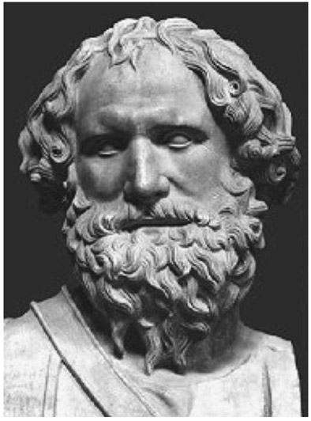
Figure 5.3. Engraving from the book Les vrais pourtraits et vies des hommes illustres grecz, latins et payens (1586).
The Greek mathematician Conon of Samos (280–220 BCE) was another contemporary of Archimedes, and he, too, was mentioned in Archimedes’s writings. Unfortunately, only fragments of transcriptions of Archimedes writings have survived, and at least seven of his treatises are completely lost. (Other authors referred to them, which is why we know that they must have existed.) However, the few copies of his treatises that survived through the Middle Ages were highly influential for scientists and mathematicians of the Renaissance, notably for Galileo Galilei (1564–1642), Johannes Kepler (1571–1630), René Descartes (1596–1650), and Pierre de Fermat (1607–1665).
While Archimedes often uses heuristic arguments—which employed logical problem-solving methods—to find the solution to a mathematical problem, he then also provides a rigorous proof for his result. In his treatise “The Method of Mechanical Theorems,” he emphasizes that heuristic reasoning, although often very useful to obtain an “educated guess” for the solution, cannot replace a mathematical proof. In antiquity, Archimedes was famous for his inventions, but his mathematical writings were not so well known. Consequently, it was more than seven centuries until his works were first compiled into a comprehensive text now known as the Archimedes codex. The codex was compiled around 530 CE by Isidore of Miletus, an architect of the Hagia Sophia patriarchal church in the Byzantine Greek capital city of Constantinople (now Istanbul). The discovery of Archimedes’s treatise “The Method of Mechanical Theorems” is a real-life Indiana Jones story, one well worth a short digression: A copy of the Archimedes codex was made around 950 CE by an anonymous scribe, but in the thirteenth century, the parchment leaves of this copy were reused for a Christian religious text. Parchment was very expensive and not readily available, so it was often “recycled” by scraping off the previous writing and then washing the pages. Mathematical texts that could only be understood by a handful of scholars were quite literally considered not worth the “paper” on which they were written. The original text on the pages of a manuscript that underwent this recycling procedure are called a palimpsest, derived from an ancient Greek compound word meaning “scraped clean to be used again.” The cleaned leaves of the Archimedes codex were folded in half, so that each sheet became two pages of the liturgical book (see fig. 5.4).
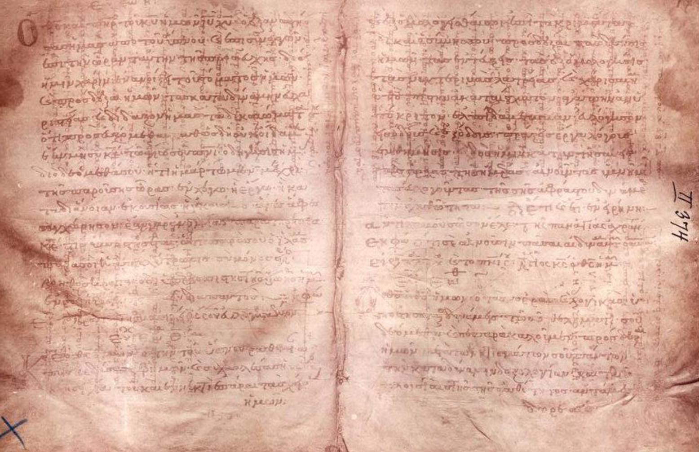
Figure 5.4. The Archimedes Palimpsest (Archimedes’s text is the fainter one running from left to right).
Fortunately, the erasure was incomplete. In 1846, while studying ancient biblical texts in a Greek Orthodox library in Constantinople, the German biblical scholar Constantin von Tischendorf (1815–1874) discovered a faint mathematical text covered up by the religious writing in an old prayer book. He excised a sample page and took it with him, but he could not determine the value or meaning of the mathematical text obscured by the prayers. After Tischendorf’s death, the University of Cambridge bought a collection of manuscript pages from his estate, including the palimpsest. At Cambridge, the unidentified sheet received a number and was filed, which could have been the end of the story. However, in 1899, a Greek scholar produced a catalog of the books in the Constantinople library, and he also discovered the faint mathematical text in the prayer book. He transcribed several lines of it, which were called to the attention of the world’s leading expert on Archimedes, who realized that the text was indeed from a treatise of Archimedes. When he visited the library in 1906, he was permitted to take photographs of the palimpsest, from which he then produced transcriptions. The palimpsest included works by Archimedes that were thought to have been lost. This sensational discovery made headlines in the newspapers throughout the world. However, during the Greco-Turkish War (1919–1922), the palimpsest was stolen, and later it was sold to a businessperson who stored it in a cellar, where it remained for decades and was damaged by water and mold. In 1971, a single-sheet of the palimpsest, kept at Cambridge, was identified as belonging to the Archimedes palimpsest from the Constantinople library. In 1998, the book reappeared in the public eye at a Christie’s auction, where it was sold to an anonymous buyer for $2 million. The severely damaged book was then taken to the Walters Art Museum in Baltimore for conservation, which was an extremely challenging task that took several years to complete.3 Highly sophisticated imaging techniques were used to create a digital copy of the palimpsest before it was returned to its new owner.4 The palimpsest contains the only existing copy of Archimedes’s treatise “The Method of Mechanical Theorems,” which was an extremely important discovery, since it provided new insights into how Archimedes obtained his results.
In this work, Archimedes shows how the area or volume of a figure can be determined by dissecting it into an infinite number of infinitely small parts (infinitesimals), thereby anticipating the modern concept of the integral. However, since he did not view the use of infinitesimals to be rigorous mathematics, Archimedes also provided proofs based on already-established methods. The proofs he gave in his treatise relied on the method of exhaustion and the reductio ad absurdum (“reduction to absurdity”), two techniques he brought to perfection. The reductio ad absurdum is a mode of reasoning in which one attempts to disprove a statement by showing that it inevitably leads to an “absurd” conclusion, for instance, a mathematical contradiction such as 1 = 0. This type of argument can be traced back to classical Greek philosophy, notably to Aristotle, and it was also applied by Euclid to prove mathematical theorems. While the reductio ad absurdum is not limited to mathematical reasoning and is used in philosophy, the method of exhaustion is of a purely mathematical nature. It modern terms, it consists of finding the area (or volume) of a shape by inscribing inside it a sequence of polygons (or polyhedra) with increased numbers of sides, whose areas (or volumes) converge to that of the given shape. To reveal these two methods in more detail, we shall sketch Archimedes’s proof of a result he published in his treatise “Measurement of a Circle.” Only a fragment of this work has survived; it consists of three propositions, the first of which states that the area of any circle is equal to the area of a right triangle in which one of the legs of the right angle is equal to the radius of the circle, and the other leg is equal to its circumference (see fig. 5.5). That is,
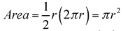
.An essential element of Archimedes’s proof of the formula for the area of a circle is the approximation of the circle by regular polygons inscribed in the circle. For example, figure 5.6 shows a square and an octagon inscribed in a circle.
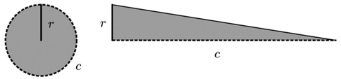
Figure 5.5.
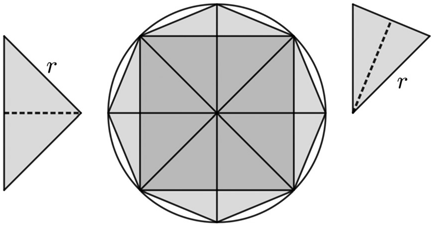
Figure 5.6.
The octagon can be obtained from the square by erecting isosceles triangles on the sides of the square, with the square’s vertices touching the circle. Repeating this procedure with the octagon would produce a 16-gon. With each doubling of the number of sides, the area of the inscribed polygon increases, but it will always be less than the area of the circumscribed circle. However, we can approximate the area of the circle by the area of an inscribed n-gon with arbitrary precision, if we only take n large enough. Similarly, we could use circumscribed n-gons whose sides are tangent to the circle. An n-gon can be decomposed into n isosceles triangles (see, e.g., fig. 5.6); its area is, therefore,
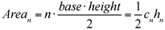
, where cn is the perimeter of the n-gon and hn is its apothem (the length of the segment from the center of the n-gon to the midpoint of one of its sides). Denoting the area of the circle and the right triangle shown in figure 5.5 by AreaCircle and AreaTriangle, respectively, we want to show that AreaCircle = AreaTriangle. To this end, Archimedes used a double reductio ad absurdum: First, we assume that AreaCircle > AreaTriangle. If we take n sufficiently large, then the area of the inscribed n-gon will lie between the area of the circle and the area of the triangle, that is, AreaCircle > Arean > AreaTriangle (recall that we can make the approximation of the circle by a polygon as close as we wish, but Arean will always be smaller than AreaCircle). Since the legs of the right triangle have length r (radius of the circle) and c (circumference of the circle), we have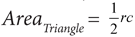
. On the other hand, the perimeter of the inscribed n-gon must be smaller than the circumference of the circle, and its apothem must be smaller than the radius of the circle, implying that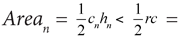
AreaTriangle, which is a contradiction to Arean > AreaTriangle. Consequently, the assumption that AreaCircle > AreaTriangle must have been wrong. If we now assume that AreaCircle < AreaTriangle, we may construct an n-gon circumscribed about the circle, such that AreaCircle < Arean < AreaTriangle. Since we have cn > c and rn > r for any n-gon circumscribed about the circle, we obtain AreaTriangle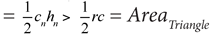
, in contradiction to Arean < AreaTriangle. This implies that the assumption AreaCircle < AreaTriangle must have been wrong as well. We thus have shown that neither AreaCircle > AreaTriangle nor AreaCircle < AreaTriangle can be true, from which we can conclude that AreaCircle = AreaTriangle.Using the technique of inscribing and circumscribing regular polygons in and about a circle, Archimedes was also able to determine the value of π with remarkable accuracy. The number π is defined as the ratio between the circumference and the diameter of a circle. For an inscribed or circumscribed n-gon, the ratio
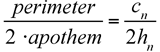
will approach π as n gets larger and larger. Archimedes developed a numerical procedure to calculate the perimeter and apothem of inscribed and circumscribed n-gons and carried out the calculation for n = 12, 24, 48, and 96, thereby obtaining a lower and an upper limit for the value of π:
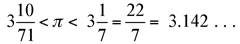
(where π = 3.14159265 . . .). The approximation of π by the fraction
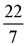
became very popular in antiquity and was commonly used in calculations until the Middle Ages. Today, this approximation is also quite popular among students in younger grades.In “On the Sphere and Cylinder,” Archimedes shows that the surface area of a sphere is four times that of a great circle (a circle on the surface of a sphere with its center at the center of the sphere). In other words, Area = 4πr2, where r is the radius of the sphere. The volume contained in the sphere is two-thirds the volume of a circumscribed cylinder; or symbolically,
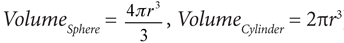
). Archimedes was very proud of this result and consequently left instructions for his tomb to be marked with a sphere inscribed in a cylinder. In fact, the Roman philosopher Cicero (106–43 BCE) visited Archimedes’s tomb when he was in Sicily in 75 BCE, 137 years after Archimedes’ death. After some searching, he found the tomb “enclosed all around and covered with brambles and thickets,” and he wrote:I noticed a small column arising a little above the bushes, on which there was a figure of a sphere and a cylinder. . . .
Unfortunately, the location of Archimedes’s tomb is not known. In another nod to this brilliant mathematician, the reverse of the Fields Medal displays a sphere inscribed in a cylinder (see fig. 5.7).
Archimedes’s proof of the relationship between the volume of a sphere and a circumscribed cylinder is a masterpiece of mathematics. However, rather than provide a detailed version of his proof, we provide a less rigorous version, which will be more intuitively comprehensible. We will need the formula for the volume of a cone; therefore, we will first provide a heuristic argument for how to compute the volume of a cone. Consider a regular square pyramid whose height is half the length of a side of its base. We can combine six of such pyramids to form a cube, as shown in figure 5.8.
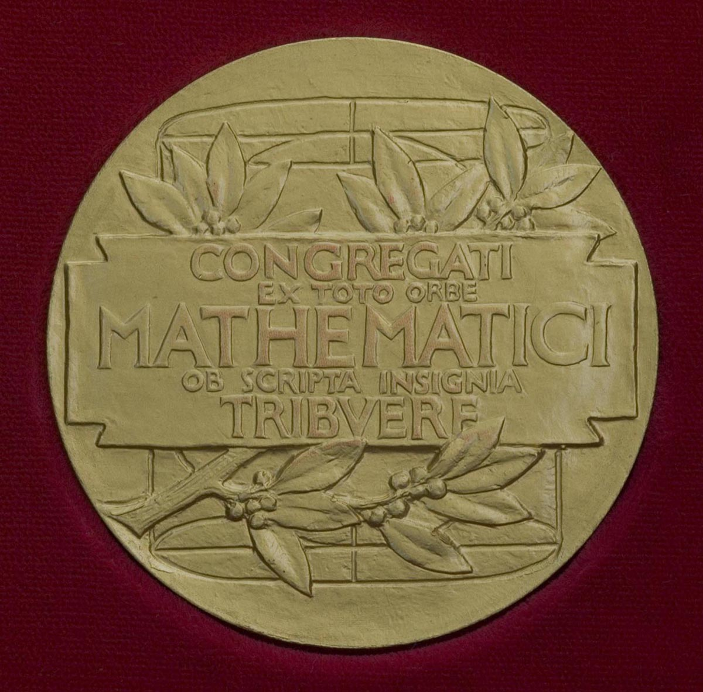
Figure 5.7. The Fields Medal (reverse). (Image from Stefan Zachow of the International Mathematical Union, retouched by King of Hearts.)
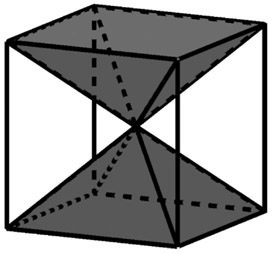
Figure 5.8.
Hence, the volume of one pyramid must be one sixth of the volume of the cube. If a is the length of a side of the cube, we obtain
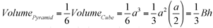
, where B is the area of the base of the pyramid and h is the length of its height. We will now argue that the formula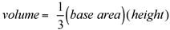
is also valid for arbitrary pyramids as well as for cones. Toward this end, we employ a theorem known as Cavalieri’s principle. It is named after the Italian mathematician Bonaventura Cavalieri (1598–1647), but it is actually just a modern implementation of Archimedes’s method of exhaustion. If we consider two regions in space included between two parallel planes, then Cavalieri’s principle states that if every plane parallel to these two planes intersects both regions in cross sections of equal area, then the two regions have equal volumes. Cavalieri’s principle is very intuitive and can be nicely illustrated with a stack of coins, as shown in figure 5.9. The volume of the stack does not change if we misalign the coins.In fact, we may also melt a coin and make a triangular coin out of it, or any other shape; as long as the areas of the cross sections of a region stay the same, its volume is preserved. This implies that if we have two pyramids with the same base area, B and the same height, H, they must have the same volume—no matter whether they are oblique or irregular. The same is true for a cone (a cone can be thought of as the limit of a pyramid whose base is a regular n-gon, when n approaches infinity). For a cone as well as for any pyramid, the base area and the height are the only quantities relevant for calculating the volume, which is always equal to
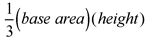
. We may now consider, as Archimedes did, a sphere inscribed in a cylinder. Archimedes noticed that the volume of the cylinder minus the volume of the sphere is exactly equal to the volume of a double cone, which is shown symbolically in figure 5.10.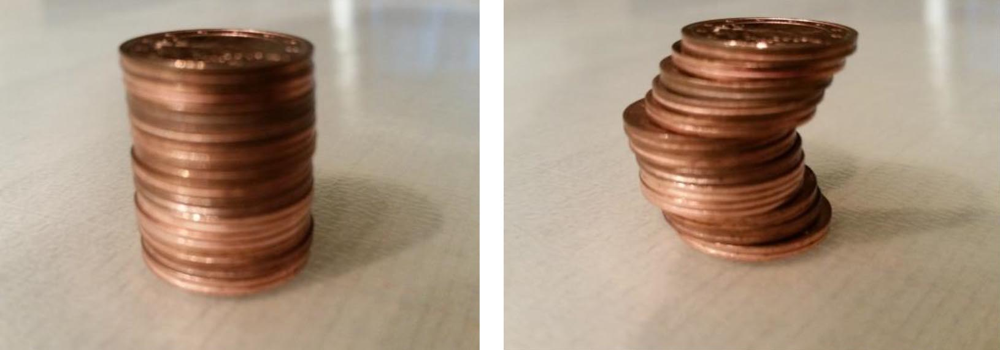
Figure 5.9.
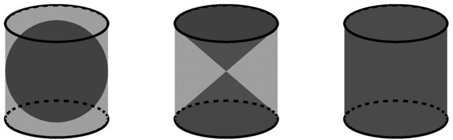
Figure 5.10.
To see that this is true, we just have to convince ourselves that at any height, the sum of the areas of the cross sections of the sphere and the double-cone equals the area of the cross section of the cylinder. In figure 5.11, we show the vertical projection of a sphere of radius r inscribed in a cylinder, together with the double cone. The cross section of the sphere at height h is a circle with radius
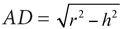
. The cross section of the double cone at height h is a circle of radius BD = h. Since the area of a circle of radius R is equal to πR2, the sum of the cross-sectional areas of sphere and double cone at height h is π(r2 – h2) + πh2 = πr2, which is exactly the cross-sectional area of the cylinder. Thus, by Cavalieri’s principle, the volume of the cylinder is exactly equal to the sum of the volumes of the sphere and the double cone. Since the volume of the double cone is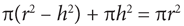
and the volume of the cylinder is (base area) ∙ (height) = πr2 ∙2r = 2πr3, the volume of the sphere must therefore, be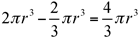
, which is two-thirds of the volume of the cylinder, as Archimedes has shown.In his lifetime, Archimedes was much more famous for his mechanical inventions than for his outstanding and far-reaching work in mathematics, yet he was convinced that pure mathematics was the only worthy pursuit. His fascination with geometry in particular is beautifully described by the Roman writer Plutarch (46–120 CE):
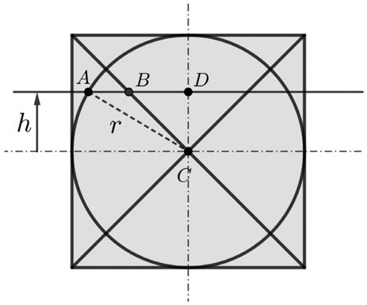
Figure 5.11.
Oftentimes, Archimedes’ servants got him against his will to the baths, to wash and anoint him, and yet being there, he would ever be drawing out the geometrical figures, even in the very embers of the chimney. And while they were anointing of him with oils and sweet savors, with his fingers he drew lines upon his naked body, so far was he taken from himself, and brought into ecstasy or trance, with the delight he had in the study of geometry.5
Archimedes was killed in 212 BCE during the capture of Syracuse by Roman forces under General Marcus Claudius Marcellus in the Second Punic War. Plutarch recounts three slightly different versions of his killing; the most popular one is that Archimedes was contemplating a mathematical diagram when the city was captured. A Roman soldier commanded him to come and meet General Marcellus, but Archimedes declined, saying that he had to finish working on the problem. The famous last words attributed to Archimedes are, “Do not disturb my circles,” a reference to the circles in the mathematical drawing that he was supposedly studying.